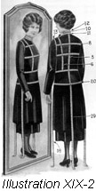
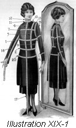
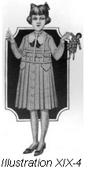
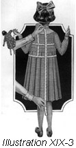
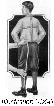
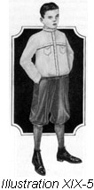
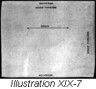
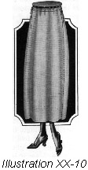

1926—The New-Way Course in Fashionable Clothes-Making
Lesson 19—Paper Patterns
Origin of the Paper Pattern
Fifty years ago, the woman who wanted to make a dress for herself or for her little daughter, had to guess at everything—from the cutting of the material to the finished style. There were no patterns to follow, nothing to guide her or help her in cutting or fitting. Each piece had to be cut separately, fitted, trimmed, basted and fitted again. The work was tedious, difficult and often disappointing in results.
Today you can go into a store and choose from thousands of different styles the particular one you would like to have. For a trifling cost you can have a complete guide—the parts of the dress cut out in the size you want, directions as to how to place the parts on the material and how to cut it, complete directions for the cutting and fitting and finishing of the garments. You can cut your material with confidence for you know exactly what the dress is going to look like. There is no more guessing, no more complicated fittings and pinnings and bastings. The paper pattern has placed at the disposal of the woman in the home thousands of beautiful styles from which she can make fashionable, well-fitting clothes for herself and others.
There are huge factories devoted exclusively to the manufacture of patterns. The patterns are cut in large quantities by machinery and of tissue paper so that they can be sold at a very low price. They are known as commercial patterns and are cut according to a series of average measurements. Of course, they cannot be cut with a regard for the peculiarities of individual figures—but as they come in many sizes they can be quickly adapted to your particular figure through the new method of "adaptive" dressmaking taught in Lesson 21 of this course. But the woman who wishes to use tissue paper patterns successfully must have a good general knowledge of foundation pattern lines, of altering patterns and of finding her own exact measurements.
Pattern Measurements
Of pattern styles it is not necessary to say very much. In every fashion center of the world are stationed prominent fashion authorities, in the employ of pattern manufacturers. Their duty is to impart to the designers in the home office at once all new style creations, all new fashion ideas. It is distinctly to the advantage of a pattern manufacturer to be the first to produce a new style.
But it is with pattern measurements that we are most concerned. To be able to purchase patterns intelligently it is necessary to know how to take measurements so that the size pattern used will be the nearest possible in all proportions to the individual figure. The bust and hip measurements are most important. All other measurements of the pattern balance from these two. Thus if you know exactly what bust and hip measurements you need, you have no difficulty in buying the size pattern best fitted to your own figure.
Do not make the mistake of buying patterns of the same size every year. Probably your measurements change, and even if the change is very slight, it is enough to take into consideration, in making clothes that are to be fashionable and smart. The first requirement of an attractive costume is perfect fit. And in the following lessons on patterns we are going to reveal to you all the important details of pattern fitting, pattern altering and pattern measurements so that you will have no trouble whatever in securing a perfect fit.
Taking Your Measurements (Illustrations XIX-1, 2, 3, 4, 5 and 6)
Before proceeding with a detailed study of patterns, it will be necessary for you to find all your measurements. For your convenience we have arranged the chart on a following page on which you can jot your exact measurements and have them always ready when you need them. We suggest, however, that you take your measurements at least every three months so that you will be sure that they are absolutely correct.
Take your measurements carefully and accurately. There are some measurements which you cannot take yourself, such as the length of the back and the sleeve. Someone will have to take these measurements for you. Stand erect but at ease and not in a strained position. Do not draw the tape measure too tightly or too loosely. When taking measurements around the body keep two fingers beneath the tape measure to insure a proper allowance for the expansion of breathing.
The measurements you take now will be used later in altering commercial patterns, and to verify the measurements of the finished garment. Bear this in mind—and take the measurements carefully. Those to be taken are:
- Bust—At fullest point.
- Waist
- Length of back—From prominent bone at back of neck to the waist line.
- Length of front—From hollow at base of throat to the waist line.
- Side front—Center of shoulder to waist.
- Side back—Center of shoulder to waist.
- Width of chest—Midway between bustline and neckline.
- Width of back—Midway between line of bust measure and neckline.
- Underarm—From armpit to waistline.
- Shoulder—From neckline to end of shoulder on top of shoulder.
- Neck (base)—Around the neck at the base.
- Neck (top)—Around the neck close beneath the chin.
- Armcye—Around the arm close to shoulder and body.
- Sleeve (front)—Inside measure from wrist to armpit.
- Sleeve (back)—From top of shoulder to elbow, from elbow to wrist.
- Around the arm—Four inches above the elbow and four inches below the elbow.
- Skirt (front)—From waist to floor.
- Skirt (side)—From waist to floor.
- Skirt (back)—From waist to floor
- Hip—Around the hip 7 1/2 inches below the waistline.
The School of Modern Dress Measurement Blank
Fill in this Chart for Future Reference
- Bust. . . . . . . . . . . . . . . . . . . . . . . . . . . . .
- Waist. . . . . . . . . . . . . . . . . . . . . . . . . . . .
- Length of back. . . . . . . . . . . . . . . . . . . . .
- Length of front . . . . . . . . . . . . . . . . . . . . .
- Side front . . . . . . . . . . . . . . . . . . . . . . . . .
- Side back . . . . . . . . . . . . . . . . . . . . . . . . .
- Width of chest . . . . . . . . . . . . . . . . . . . . .
- Width of back . . . . . . . . . . . . . . . . . . . . .
- Underarm . . . . . . . . . . . . . . . . . . . . . . . . .
- Shoulder . . . . . . . . . . . . . . . . . . . . . . . . .
- Neck (base) . . . . . . . . . . . . . . . . . . . . . .
- Neck (top) . . . . . . . . . . . . . . . . . . . . . . .
- Armcye . . . . . . . . . . . . . . . . . . . . . . . . . .
- Sleeve (front) . . . . . . . . . . . . . . . . . . . . .
- Sleeve (back) . . . . . . . . . . . . . . . . . . . . .
- Around the arm . . . . . . . . . . . . . . . . . . . .
- Skirt (front) . . . . . . . . . . . . . . . . . . . . . . .
- Skirt (side) . . . . . . . . . . . . . . . . . . . . . . .
- Skirt (back) . . . . . . . . . . . . . . . . . . . . . .
- Hip . . . . . . . . . . . . . . . . . . . . . . . . . . . . .
Study the illustrations carefully in connection with the taking of measurements. Note that on the center front, center back, side front and side back the number of inches between the neck and chest line, and the chest and bust line, and the bust and waistline are important. You will require this information in the altering of patterns. The illustrations indicate just where these measurements are to be found.
Care should be taken that the lines of the dress or waist are not followed when measurements are being taken. The person taking the measurements should ignore the lines of the garment worn entirely, and place the tape exactly where it belongs on the figure. The person whose measurements are being taken should not stand too erect as this throws the shoulders back and gives a wrong measurement.
Children's Measurements
A girl's measurements are taken in the same manner as a woman's measurements are taken, with the exception that the skirt measure is taken to the knee instead of to the floor.
Boys' measurements for the waist are taken exactly as the girls' measurements. The boys' trouser measurements are taken at the following points:
- Front, from waist to crotch.
- Front, from crotch to knee.
- Back, from waist to crotch.
- Back, from crotch to knee.
- Side, from waist to knee.
- Around the body at the waist.
- Across the front.
- Across the seat.
In taking children's measurements never draw the tape tightly. Rather allow it to be a trifle looser than when taking adult's measurements, as a child is constantly growing and measurements are never long the same.
The Use of Patterns (Illustrations XIX-7, 8, 9 and 10)
In the use of paper patterns, certain definite things must be remembered. We have tabulated them here for your convenience.
-  The selvedge is the outside edge of the material woven closer and heavier than the material itself.
- The warp is the lengthwise thread running the same as the selvedge.
- The woof or filling thread is the thread running crosswise or horizontally to the selvedge.
- A lengthwise fold is a fold made lengthwise running with the warp or selvedge.
- A crosswise fold is a fold from selvedge to selvedge or running with the woof.
-  In garment cutting reference is made to bias lines quite frequently. This does not always mean a true bias as taught in previous lessons. An angle that does not make a true bias is called a garment bias and this is often found in skirt seams. These seams stretch and should always be stayed. A garment bias must never be used for facings, pipings or bindings.
- All these lines and folds are referred to many times in the following lessons. Make yourself familiar with them so you will not have to refer back to this lesson later.
- All commercial patterns should first be tested by measuring the patterns and comparing them with the individual measurements of the person. Corrections should be made on the paper pattern to make it conform with the individual measurements. It is then a wise plan to fit a plain model lining from these measurements, over which any other pattern may later be altered. This saves a great deal of time and trouble and enables you to have a perfect-fitting pattern at all times. The model pattern may be made of unbleached muslin or cambric. Use a plain two-piece skirt pattern and a plain shirtwaist pattern that closes in front and has a high neck. The measurements taken above should be used in constructing the model pattern, the making of which is taught in the next lesson.
Lessons 18 and 19
Questions
- Give the method of shrinking linen and cotton.
- How is wool material sponged?
- How can you distinguish the right side of twilled material?
- (a) Which way should the nap of velvet run in a garment?
(b) Is this the exception on the rule to follow with napped materials? - What measurements are most important in buying a pattern?
- (a) How is bust measure taken?
(b) Where is the width of the chest measured?
(c) Where is the hip measure taken? - What is the selvedge?
- (a) Which way do warp threads run? (b) Woof?
- What is meant by a garment bias?